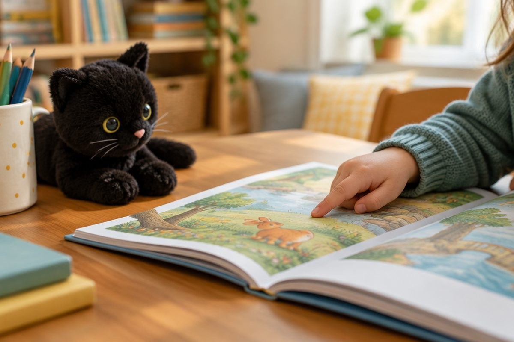

전체 단원 › 1~2학년 › 영어 › 3단계 · 짧은 이야기 읽기
영어 이야기를 혼자 읽어 볼까?

짧은 영어 이야기를 읽어 봐요. 배운 낱말이 많이 나와요!
이야기를 읽어요: My Cat
손가락으로 낱말을 짚으며 천천히 읽어요.
듣기 버튼으로 먼저 들어도 좋아요.
I have a cat. My cat is big. It is black. It can run. I like my cat!
문장 하나씩 뜻을 알아봐요
I have a cat. 나는 고양이가 있어요.
My cat is big. 내 고양이는 커요.
It is black. 그것은 까매요.
It can run. 그것은 달릴 수 있어요. I like my cat! 나는 내 고양이가 좋아요!
It은 누구일까요?
It은 "그것"이라는 뜻이에요.
이야기에서 It은 앞에 나온 고양이예요.
같은 말을 또 하지 않으려고 It을 써요.
My cat is big. It is black. → It = my cat
읽고 나서 생각해요
누가 나왔나요? 어떤 모습인가요?
이야기 속 낱말에 동그라미를 쳐 봐요.
Who? a cat / What color? black / Big or small? big
핵심 낱말
- I have ~.
- 나는 ~이 있어요(가지고 있어요).
- It
- 그것. 앞에 나온 것을 다시 가리키는 말
- can
- ~할 수 있다
- big / small
- 큰 / 작은
꼭 알아야 할 표현
| I have a cat. | 나는 고양이가 있어요. | |
| My cat is big. | 내 고양이는 커요. | |
| It is black. | 그것은 까매요. | |
| It can run. | 그것은 달릴 수 있어요. | |
| I like my cat! | 나는 내 고양이가 좋아요! | |
| big | 큰 | [빅] |
| small | 작은 | [스몰] |
| run | 달리다 | [런] |
| It | 그것 | [잇] |
| have | 가지고 있다 | [해브] |
한 줄 정리
- 낱말을 짚으며 천천히 소리 내어 읽어요.
- It은 앞에 나온 것을 다시 가리키는 "그것"이에요.
- 읽고 나서 누가, 어떤 모습인지 생각해요.
학교 교육과정 연결 (미리 배우기)
- [4영01-09] 시, 노래, 이야기를 공감하며 듣는다.
- [4영01-04] 소리와 철자의 관계를 이해하며 쉽고 간단한 단어, 어구, 문장을 소리 내어 읽는다.
- [4영01-05] 쉽고 간단한 단어, 어구, 문장의 의미를 이해한다.